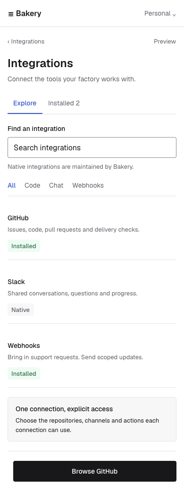

Integrations, from discovery to delivery.
20 screen and state views, each on desktop and phone. Four primitive sheets. Editable Paper designs with sample data.

Reuse and implementation boundary
Named primitive masters and shared tokens live in Paper. The mocks reuse clones, with source mappings and exact JSX/style exports in the handoff. These are editable design nodes, not live React components. Master edits require clone regeneration until the shared component implementation exists.
Provider consent happens in GitHub or Slack. This gallery performs no authorization, secret access, or connection changes. Semantic controls, keyboard behavior, and Storybook validation belong to implementation.
Component and screen map · Exact Paper styles and JSX